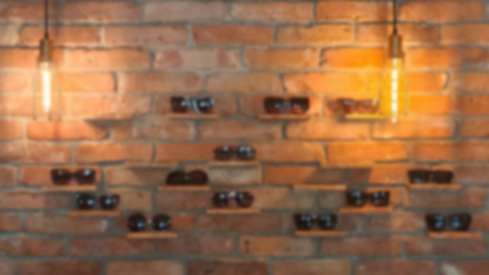
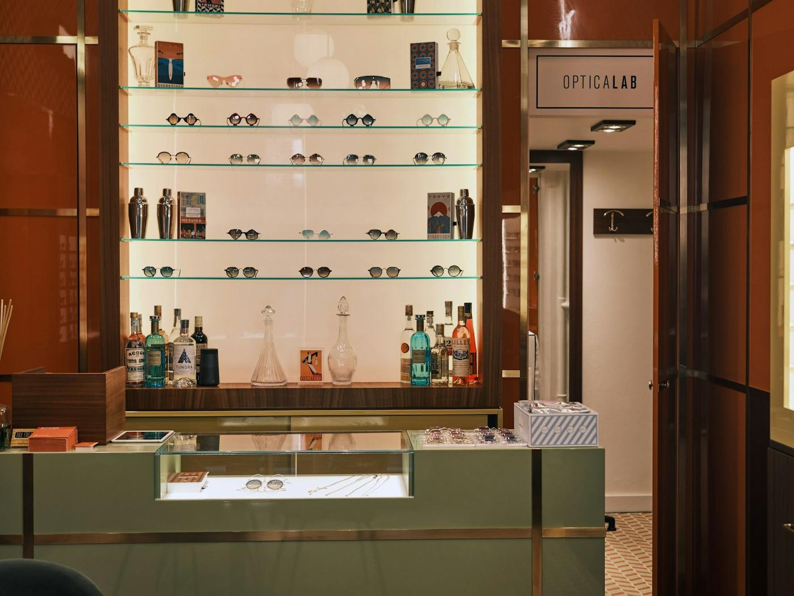
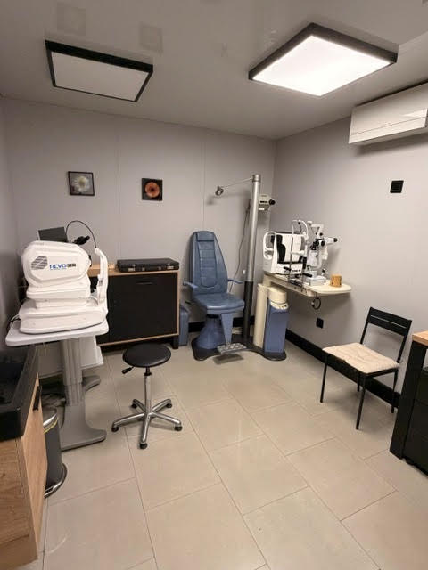
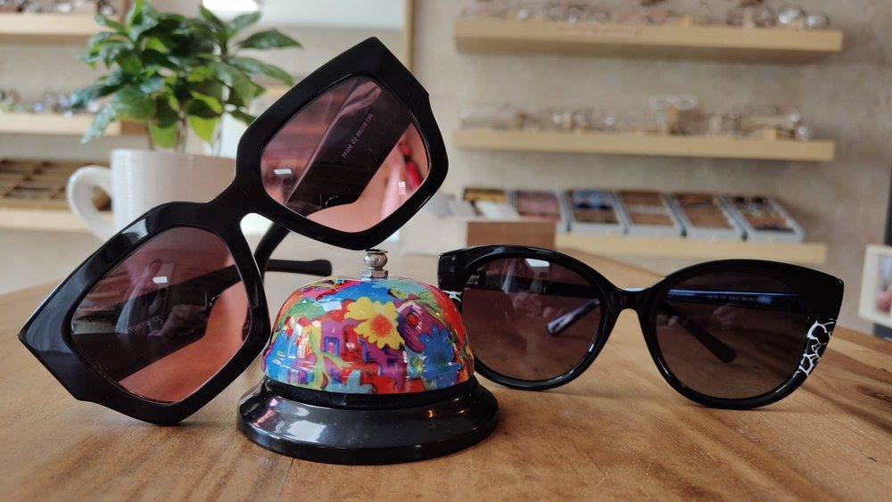
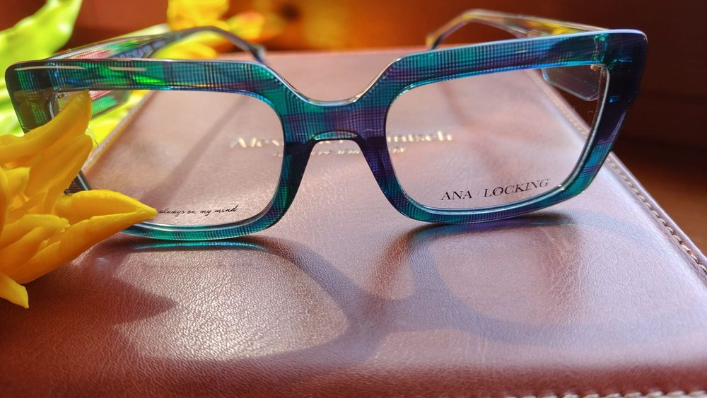
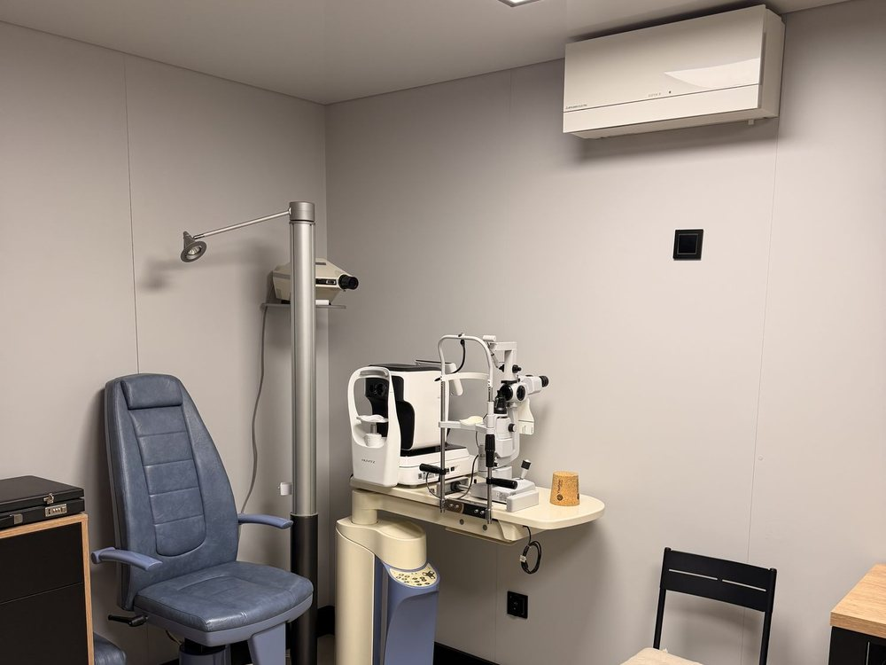
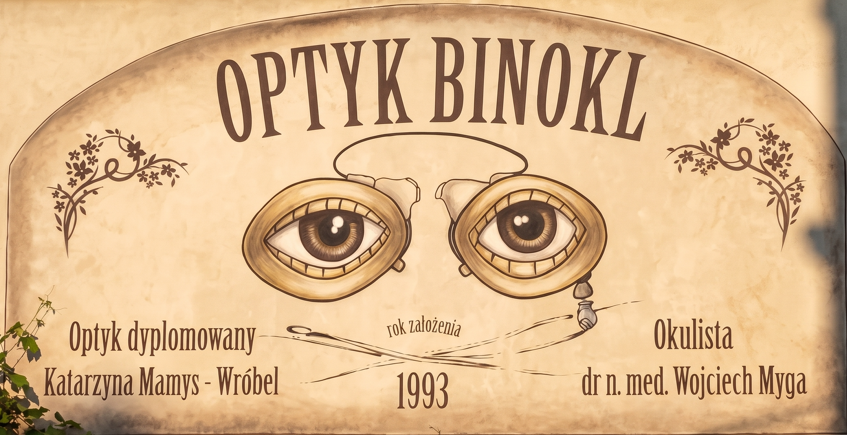

Precyzja wykonania
Własna pracownia i sprzęt szlifierski — okulary powstają na miejscu, pod moim okiem, od pierwszego pomiaru do ostatniej regulacji.

Rok założenia 1993 · Piekary Śląskie
„Wyraźna wizja przez piękne okulary to nie przywilej, lecz standard, który od ponad 30 lat jest moją misją.”

O nas
Zakład optyczny Binokl rozpoczął działalność w lipcu 1993 roku. Od ponad 30 lat z ogromną przyjemnością pomagam klientom w wyborze okularów dopasowanych do ich potrzeb, uwzględniając komfort widzenia i estetykę.
W 1998 roku ukończyłam studium optyczne i uzyskałam dyplom optyka-technika. Posiadam nowoczesny sprzęt szlifierski — dzięki temu mam pełną kontrolę na każdym etapie wykonania okularów.
Co to oznacza dla Ciebie
Własna pracownia i sprzęt szlifierski — okulary powstają na miejscu, pod moim okiem, od pierwszego pomiaru do ostatniej regulacji.
Nawet w najbardziej wymagających oprawach i przy skomplikowanych wadach wzroku.
Bez pośredników i wysyłki do zewnętrznych pracowni.

Badanie wzroku
Aby zapewnić Państwu kompleksową opiekę nad wzrokiem, od 2000 roku swoją praktykę okulistyczną prowadzi u nas dr Wojciech Myga, który zajmuje się profesjonalną diagnostyką i leczeniem schorzeń oczu, w tym:
Szkła korekcyjne
Od początku działalności współpracuję z firmą Essilor — liderem branży optycznej i producentem zaawansowanych technologicznie szkieł korekcyjnych, w tym progresywnych soczewek Varilux.
Aktualności

Na ścianie w salonie pojawiły się nowe modele — z pełną ochroną UV i możliwością wstawienia szkieł korekcyjnych.

Najnowsza generacja szkieł progresywnych Essilor — płynne widzenie na każdą odległość. Zapytaj o dobór podczas wizyty.

Wolne terminy u dr. n. med. Wojciecha Mygi — zadzwoń pod 32 767 44 62 i umów dogodną godzinę.
Opinie klientów
Najlepszy optyk, do jakiego trafiłam. Pani idealnie dobrała oprawki, tłumacząc, na co dokładnie zwrócić uwagę przy danej wadzie. Jestem zachwycona i polecam z całego serca!
Aleksandra K.Świetny optyk, w którym nie tylko znajdziesz ciekawe oprawki, ale dowiesz się bardzo dużo na temat doboru odpowiednich szkieł. Chyba nigdzie nie traktują tak fajnie klienta jak tutaj!
Bartek K.Za każdym razem jesteśmy bardzo zadowoleni z doboru oprawek jak i szkieł. Fachowa pomoc nie tylko przy zakupie, ale również podczas awarii.
Agata A.Galeria
Częste pytania
Tak — najprościej zadzwonić pod numer 32 767 44 62 i ustalić termin. Na sam dobór oprawek i przymiarkę można przyjść bez umówienia, w godzinach otwarcia salonu.
Okulary powstają w naszej własnej pracowni, bez wysyłki do zewnętrznych zakładów — dlatego realizacja jest szybsza niż przy zamówieniu „na zewnątrz”. Dokładny termin podajemy przy zamówieniu, bo zależy od rodzaju szkieł.
Do pracy przy ekranie proponujemy szkła z filtrem światła niebieskiego, a przy dalekowzroczności starczej — konstrukcje biurowe lub progresywne Varilux. Dobieramy je po rozmowie o tym, jak wygląda Twój dzień pracy.
Kontakt
Umów badanie wzroku albo po prostu wpadnij obejrzeć nowe oprawki. Przymiarka nic nie kosztuje.
Pn – Pt: 10:00 – 17:00
Sobota: 10:00 – 13:00
Niedziela: zamknięte
